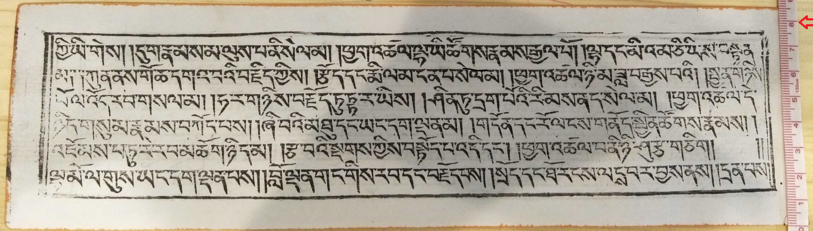
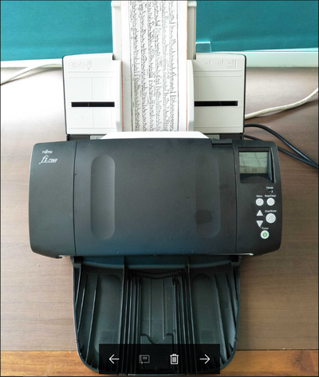

སྟེང་ནོན། 🡲 浏览སྟེང་ནོན། 🡲 📂AB12འདེམས། 🡲 📂sourceསྟེང་ནོན། 🡲 📂01སྟེང་ནོན། 🡲确定སྟེང་ནོན།
སྟེང་ནོན། 🡲 浏览སྟེང་ནོན། 🡲 📂AB12འདེམས། 🡲 📂sourceསྟེང་ནོན། 🡲 📂01སྟེང་ནོན། 🡲确定སྟེང་ནོན།དཀར་ཆག | --------| ༡༽ པར་སྣོད་ཁ་ཕྱེ་སྟངས། | ༢༽ པར་མིང་འདོགས་སྟངས།| ༣༽ པར་གྱི་སྤུས་ཚད་སྒྲིག་འགོད། | ༤༽ བཤེར་པར་གྱི་ཆེ་ཆུང་སོགས་ཀྱི་སྒྲིག་འགོད། | ༥༽ སྒྲིག་འགོད་གཞན་འགའ། |
ScandAll-Proཁ་ཕྱེ། 🡲 སྟེང་ནོན། 🡲 浏览སྟེང་ནོན། 🡲 📂AB12འདེམས། 🡲 📂sourceསྟེང་ནོན། 🡲 📂01སྟེང་ནོན། 🡲确定སྟེང་ནོན།
དང་པོ། བཤེར་འབེབས་ཇི་ལྟར་བྱེད་དགོས་མིན་གྱི་ལམ་སྟོན་དཔེ་རིས་ལམ་ནས་འགོད་པར་བྱ། གཤམ་གྱི་དཔེ་ཪིས་ནི་ཁྱེད་ཀྱི་བཤེར་འབེབས་ལས་རིགས་ཁྲོད་མེད་དུ་མི་རུང་བའི་སྙི་ཆས་གལ་ཆེན་ཞིག་ཡིན། སྙི་ཆས་འདི་ནི་བཤེར་ཆས་གཉིས་ཆའི་སྒྲིག་འགོད་འདི་ནས་བྱེད་དགོས་པ་དང་ཡིག་སྣོད་མ་ལག་ཡང་ འདི་ནས་སྒྲིག་འགོད་བྱེད་དགོས་པ་ཡིན། འདི་ནི་བཤེར་ཆས་སྒྲིག་འགོད་བྱེད་སའི་སྙི་ཆས་སྒོ་ཕྱེ་ཡོད་པའི་རྣམ་པ་རེད། འགུལ་རིས་ནང་གསལ་བཞིན་ནོན་དང་སྒྲིག་འགོད་མ་ལག་གསལ་ཡོང་།
ScandAll-Proཁ་ཕྱེ། 🡲 命名规则སྟེང་ནོན། 🡲 可用设置 🡲 日期和时间སྟེང་ནོན། 🡲 已应用设置 🡲 页面计数器འདེམས། 🡲 字符串1 🡲 imageབྲིས། 🡲确定ནོན།
འོག་གི་འགུལ་རིས་ནང་གསལ་བ་བཞིན་བཤེར་འབེབས་བྱེད་རྒྱུ་དཔེ་ཆའི་ཤོག་གྲངས་ཀྱི་མིང་ཇི་ལྟར་འདོགས་དགོས་མིན་སོགས་ཀྱི་སྐོར་ཡིན།

ScandAll-Proཁ་ཕྱེ། 🡲 སྟེང་ནོན། 🡲 文件格式 🡲 Tagged Image File Format(.tif)འདེམས། 🡲 颜色格式 🡲 24位彩色འདེམས། 🡲 压缩（0）🡲 No compressionའདེམས། 🡲 确定ནོན།
འདིར་ནང་བསྟན་དཔེ་ཚོགས་ལྟེ་གནས་ཀྱི་ཚད་གཞི་དང་མཐུན་པར་སྐབས་འདིའི་པར་ཀྱི་སྤུས་ཚད་ལས་ཡིག་ཆའི་རྣམ་སྒྲིག Tagged Image File Format(.tif)འདེམས་དགོས། ཚོན་ཁྲ་(color format) "24 bit" འདེམས། ཚགས་བསྡུས་ཚད་གཞི་ "no compression" འདེམས། ཡིག་ཆའི་རྣམ་སྒྲིག་དང་། ཚོན་ཁྲ། ཚགས་བསྡུས་ཚད་གཞི་གསུམ་པར་རིས་ནང་གསལ་བ་བཞིན་ཡོད་ན་གཞི་ནས་འོག་ཏུ་ཡོད་པའི་ "确定" ཞེས་པའི་སྟེང་བསྣུན།
当前的设置སྟེང་ནོན། 🡲 纸张来源 🡲 进纸器(双面)འདེམས། 🡲  སྟེང་ནོན། 🡲 基本设置སྟེང་ནོན། 🡲 图像模式 🡲 彩色འདེམས། 🡲 纸张来源 🡲 进纸器(双面)འདེམས། 🡲 基本设置སྟེང་ནོན། 🡲 分辨率 སྟེང་ནོན། 🡲 400 dpiབཟོས། 🡲 纸张大小སྟེང་ནོན། 🡲 自定义འདེམས། 🡲 宽度(ཚད་ཕྲིས།) 🡲 长度(ཚད་ཕྲིས།)
སྟེང་ནོན། 🡲 基本设置སྟེང་ནོན། 🡲 图像模式 🡲 彩色འདེམས། 🡲 纸张来源 🡲 进纸器(双面)འདེམས། 🡲 基本设置སྟེང་ནོན། 🡲 分辨率 སྟེང་ནོན། 🡲 400 dpiབཟོས། 🡲 纸张大小སྟེང་ནོན། 🡲 自定义འདེམས། 🡲 宽度(ཚད་ཕྲིས།) 🡲 长度(ཚད་ཕྲིས།)
འགུལ་རིས་ནང་གསལ་བ་ནི་TWAIN སྙི་ཆས་ཀྱི་རྨང་གཞིའི་སྒྲིག་འགོད་སྟེགས་བུ་རེད། འདིའི་སྡེ་ཚན་དང་པོ་ནས་འདེམས་དགོས་པ་ཁག དང་པོ། ཚོན་མདོག་འདེམ་དགོས། ཤོག་གུའི་རྒྱབ་མདུན་གཉིས་ཆ་ 双面 འདེམས་དགོས། འགུལ་རིས་ངོས་སུ་གསལ་བ་བཞིན་ dpi 400 ངེས་པར་འདེམས་དགོས། ཤོག་ལྡེབས་ཀྱི་ཆེ་ཆུང་འདེམས་དགོས། འདིར་དཔེ་རིས་ངོས་སུ་གསལ་བ་བཞིན་ཁྱེད་ཀྱིས་བཤེར་འབེབས་བྱེད་རྒྱུའི་དཔེ་ཆ་དེ་དེབ་གཟུགས་དང་པོ་ཏིའི་རིགས་གང་ཡིན་རུང་ཐིག་ཤིང་སྤྱད་དེ་ཚད་བརྒྱབ་རྗེས་ཨང་སྒམ་འདི་སྐོང་དགོས། གལ་ཏེ་ཚད་མ་བརྒྱབ་ན་དཔེ་ཆའི་མགོ་གཞུག་དང་ཡང་ན་ཕྱོགས་གང་རུང་ཞིག་ནས་གཏུབ་འགྲོ་བ་དང་ཡང་ན་ཤོག་སྟོང་ཐོལ་བ་སླེབ་ཡོང་གི་ཡོད། དེའི་ཕྱིར་ཚད་རྒྱག་རྒྱུ་གལ་ཆེན་ཡིན།
འོག་གི་དཔེ་རིས་ནི་དཔེ་ཆ་ཁག་ལ་ཚད་ཇི་ལྟར་འཇལ་དགོས་པའི་དཔེ་མཚོན་རེད།

基本设置 སྟེང་ནོན། 🡲 图像འདེམས། 🡲 自动འདེམས། 🡲 页面སྟེང་ནོན། 🡲 旋转འདེམས། 🡲 逆时针旋转90度འདེམས། 或是ཡང་ན། 180度འདེམས། 🡲 翻页类型སྟེང་ནོན། 🡲 书འདེམས། 🡲 页面སྟེང་ནོན། 🡲 无 背景 黑色 སྟེང་ནོན། 🡲 禁用འདེམས། 进纸 检测 操作 停止并显示图像 🡲 确定སྟེང་ནོན།
སྡེ་ཚན་图像ནང་དུ་自动 འདེམས་དགོས། འདིའི་གཞན་ཚང་མ་ 禁用 འདེམས་པས་ཆོག དཔེ་རིས་ངོས་སུ་གསལ་བ་བཞིན་གལ་ཏེ་ཁྱེད་ཀྱིས་བཤེར་འབེབས་བྱེད་རྒྱུའི་དཔེ་ཆ་དེ་པོ་ཏིའི་རིགས་ཡིན་ན་༩༠ འོག་མ་དེ་ངེས་པར་འདེམས་དགོས་པ་ཡིན། དཔེ་དེབ་རིགས་ཡིན་ན་180 དང་དེའི་གཤམ་གྱི་ 书 ཞེས་པ་དེ་འདེམས་དགོས། དེ་ལས་གཞན་པའི་སྒྲིག་འགོད་རྣམས་འགུལ་རིས་ནང་གསལ་བཞིན་བྱོས།
འདི་ནི་བཤེར་ཆས་ནང་དཔེ་ཆ་བཞག་སྟེ་བཤེར་འབེབས་འགོ་རྩོམ་བཞིན་བའི་དཔེ་མཚོན་རེད། གྲ་སྒྲིག་ལེགས་པར་བྱས་རྗེས། གཤམ་གྱི་དཔེ་རིས་ལ་གཟིགས།
